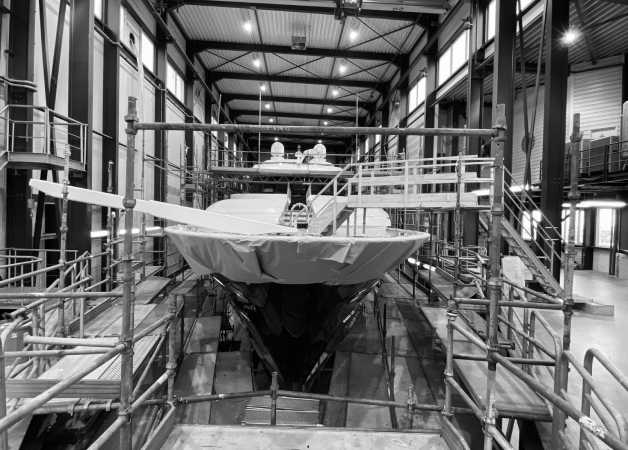
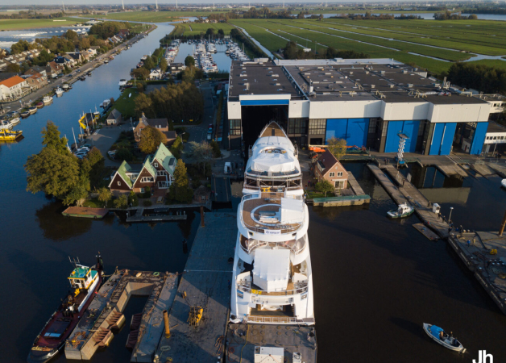

- Crew Employment and Payroll service
- Seafarer Employment Agreements and amendments
- Payroll administration incl., salary, bonus, tax, social security.
- Annual Operational Budget
- Access to Expense Accounting System for all agreed users
- Invoice & Suppliers Payment service
- Review and approval of purchase requests/orders
- Monthly committed spend forecasting and fund requests
- Dedicated Managed Bank Accounts – Euro or Dollar
- Dedicated pre-loaded expense Payment Cards
- Reconciliation of Yacht Management Accounts with Charter proceeds & APA
- Monthly & Annual Financial Reports
- Liaise With Owners & Crew Provider to ensure adequate funding for Payroll
- Assist with VAT processing
Financial Management

Technical Management
- Provision of competent personnel to supervise the maintenance and general efficiency of the yacht and provide general advice and support; the Manager shall report to the Owner on the status of maintenance (if any) and the general efficiency on the yacht on a monthly basis;
- Assist with establishing a suitable planned maintenance and inventory system onboard;
- Review maintenance reports and provide feedback for improvement;
- Coordinate the creation of a long term maintenance plan of major works;
- Coordinate with shipyard ongoing maintenance activities;
- Compile a list of ongoing defects for the Yacht - (Notes shared list);
- Analyse any major defects to prevent recurrence;
- Provide support in the event of technical difficulties;
- Provide general technical and commercial advice and guidance;
- Assist with sourcing engineering spares, supplies or service as required;
- Provide Technical assistance with insurance Claims;
- Administer a Fluid Sampling and analysis program;
- Coordinate crew structure, duties and responsibilities;
- Inspect the yacht at least twice per season (minimum four times per year) providing a Technical report on completion;
- Assist with Flag and Classification surveys, preparation and support
Safety Management Services
- Yacht Specific Standard Operating Procedures are established and followed
- Safe Systems of Work are established and followed
- Yacht is maintained to the required safe standards
- Annual Internal audits of SMS
- Security Alert Program, Periodic Testing & Emergency Response
- Verify Accuracy of all applicable Certificates and Documents
- Online / Offline Safety Management System
- Designated Person Ashore (DPA)
- Emergency Drill Schedule is established and regularly undertaken
- Flag State Statutory requirements are met
- Classification Society requirements are met
- All reported Safety Issues are followed up
- Monitor Certificates and Documents due dates and expiry dates
- Assist with preparations for External audits and Surveys
- Ensure External Surveys and Audits are conducted

Yacht Refit Management
Refitting a yacht can be a daunting and stressful experience, which is why successful refits are overseen by a knowledgeable and qualified project manager. RYacht Management has the skills, expertise and experience to act as this link between the shipyard and the client, ensuring the efficient and smooth refit of your yacht. Serving as this knowledgeable and professional liaison, our Project Managers will propose suitable refit yards, suppliers, designers, contractors and specialists and work with these third parties to ensure a successful outcome of the refit project.
Services available include:
- Pre-planning and scope of work
- Selection of suitable shipyards
- Obtaining quotes, costs and financial control
- Technical advice
- Purchasing and assistance with contractors
- Full-attendance project management
- Class and Flag State involvement in repairs and modifications
For more information on how Ryacht Management can assist you with your yacht refit, please contact us.